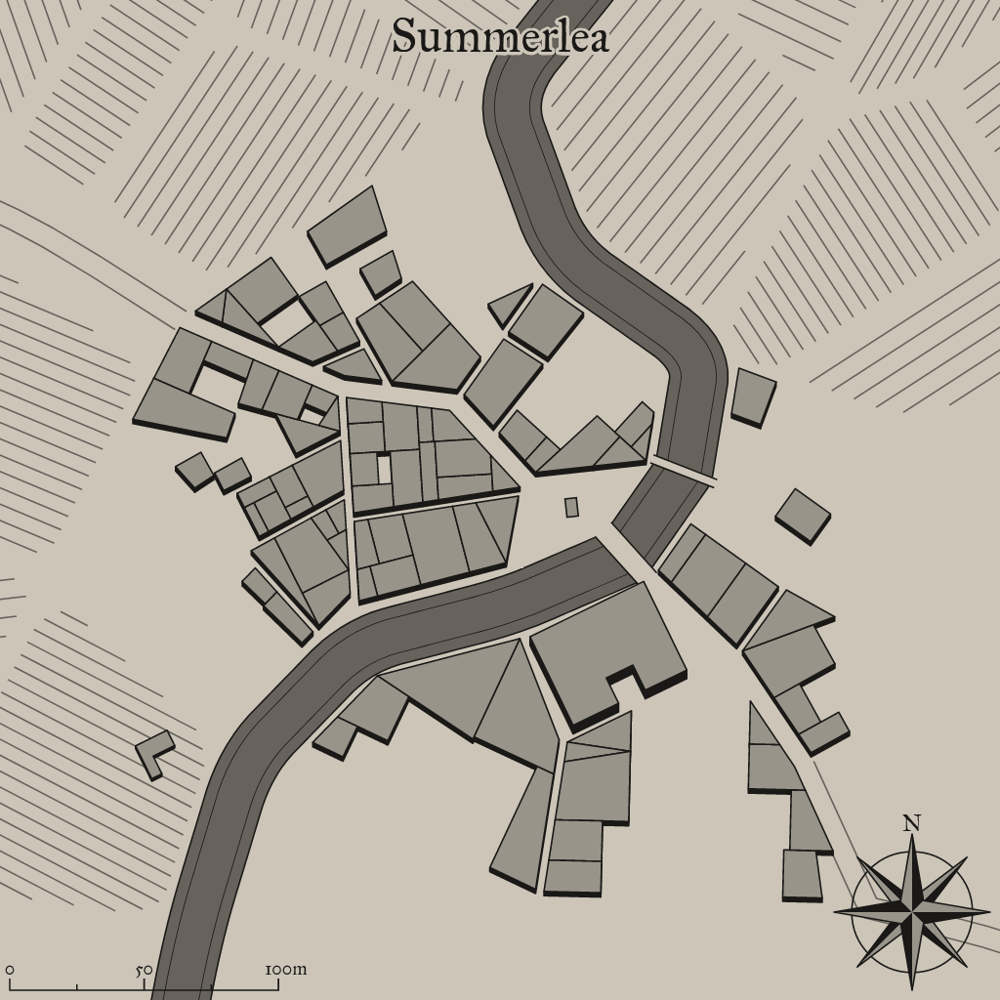

Summerlea
A mystical settlement in a fantastical world

Background Flavor
The citizens of this village have always had a great relationship with the local fae population and exist in symbiosis with them. Fae protect the village, and the citizens provide whatever the fae need. Strangers are unwelcome unless they are travelling merchants plying their wares.
1
Settlement Features
Summerlea is a small town 201-2,000 located in the coastal region of the areas greater temperate rain forest. The settlement seems to be quite ancient. Summerlea and the local surroundings are under the control of a secret syndicate.
Demographics
- Name: Summerlea
- Size: Small Town 201-2,000
- Real population: 362
- Population Density: Plentiful
- Wealth: Plentiful
- Number by race: Human 40%, Dwarf 10%, Elf 10%, Gnome 10%, Halfling 10%, Half-elf 15%, Half-orc 5%,
- Wealth: Wealthy
- Age: 4
- Alignment: Lawful Neutral
- Government Type: A Secret Syndicate - An unofficial or illegal group like a thieves’ guild rules the settlement—they may use a puppet leader to maintain secrecy, but the group members pull the strings in town.
- Settlement Trait: Defensible
- Number Of Wards: 9
- Number of Districts: 3
Industry and Economy
- Primary Raw Materials: Forestry
- Shops of Note: Cartography, Mason, Instrument Crafter.
- Number Of Inns/Taverns: 2
- Inns/Taverns of Note: The Naked Mohel and Tall Bee Pub, Flaming Heron Pub.
Districts
Lower South Glostes
Culture: Tavern, playhouse, horse track, theater, tournament lists, menagerie, concert hall, arena, circus, colosseum,
Cloowergost Cross
Green: Common, green, herbalist, fishery, garden, lumberyard, granary, farm, parkland.
Upper East Winwoopt
Law and Order: Guardhouse, watchtower, gallows, gaol, prison, courthouse.
Taverns / Inns
The Naked Mohel and Tall Bee Pub
Location
Lower South Glostes
Description
From the outside it looks homey, humble and warm. Logs and wooden pillars make up most of the building's outer structure.
Innkeeper
Bob
Menu
- Cheese rolls with a filling of nuts, honey and vegetables (6 cp)
- Apple Stuffed Mushrooms (8 cp)
- Pork liver, Seaweed, Succotash, Rice, Fruitcake (2 sp).
- Soft cheese, Pomegranite, Corn pone (8 sp).
- Veal sweetbreads, Sharp cheese, Leeks, Peach (2 gp).
Flaming Heron Pub
Location
Upper East Winwoopt
Description
It's difficult to see through the small, stained glass windows, but the enjoyment from within can be felt outside.
Innkeeper
Bob
Menu
- Roasted Cabbage, Mug of Stout (4 cp)
- Stewed Lentils, Mug of Cider (3 cp)
- Pork liver, Seaweed, Succotash, Rice, Fruitcake (2 sp).
- Stewed Lentils, Mug of Perry (4 cp)
- Stewed Sausage and Soft Cheese, Tankard of Stout (8 cp)
2